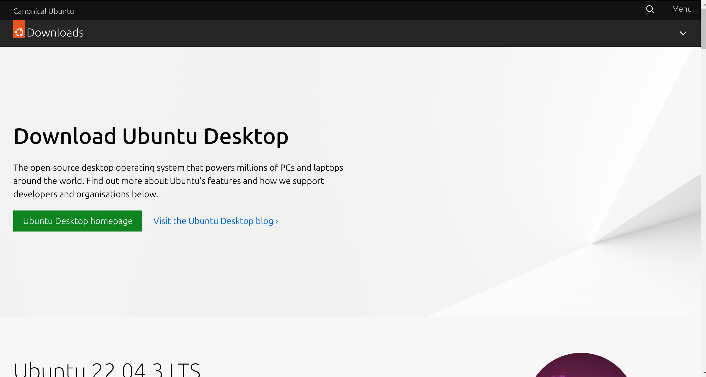

1. Descargar la ISO de Linux_Ubuntu
Para poder descargar la ISO (International Organization for Standardization) de Ubuntu tenemos que visitar
la siguiente PaginaWeb, oficial de Ubuntu.

Bajaremos para ver las diferentes versiones de Ubuntu, hay diferentes versiones con diferente propositos.
Nosotros seleccionamos la version que contenga las siglas LTS, estas siglas significa soporte a largo plazo,
perfecto para nuestro proposito.Clicaremos sobre el boton verde llamado Download. Despues de cliclar de
descargara en la carpeta descargas de nuestro ordenador.
2. Crear una Nueva Maquina Virtual
Presionamos en nuestro teclado la tecla de windows o clicamos en la lupa de la barra de tareas para
buscar Virtual Box y asi abrirlo. Una vez abierto nos mostrara la siguiente ventana, nos mostrara diferentes
zonas acciones que podemos hacer (Preferencias, Importar, Exportar, Nueva y Añadir), nosotros selecionaremos
la opcion Nueva haciendo clic sobre la estrella azul.
Senos abrirá una nueva pestaña, en la que nos muestra diferentes configuraciones que le podemos hacer a la
máquina virtual. De todos los apartados solo nos interesan dos, primero el nombre: que le vamos a asignar en
nuestro caso, asignaremos algo reconocible con Linux para saber de qué ISO se trata y el segundo apartado
Imagen ISO: este apartado seleccionaremos Otro para abrir los archivos del equipo, debemos navegar hasta donde
tengamos la ISO, en nuestro caso la hemos descargado anteriormente así que se encuentre en la carpeta de descargas.
Una vez que hallamos terminados estos dos apartados, clicamos en el botón de la parte inferior derecha llamado Siguiente.
En esta tercera ventana pedira un nombre de usuario y una contraseña para este usuario a modo de ejemplo le mostrare la configuracion
que yo utilizare pero usted puede utilizar la que prefiera. Despues de esto solo tendremos que clicar sobre el boton de Siguiente
nuevamente abajo a la derecha.
En esta tercera ventana nos mostrara el rendimiento que le querramos poner a la maquina virtual partiendo de los componentes
de tu ordenador. Como vamos a hacer pocas acciones en la maquina virtual lo dejamos como predeterminado pero tu puedes
configurarlo como prefieras y clicamos de nuevo en Siguiente.
Este partado es parecido al anterior solo que tratamos en este caso con el almacenamiento que le vamos a asignar como antes
vamos a dejarlo predeterminado o puedes configurarlo a tu nescesidades. Clicaremos nuevamente en Siguiente.
En la ultima fase nos mostrara un resumen de todas las desiciones que hemos tomando en la configuracion de la maquina virtual.
Comprobamos de que todos los datos estan correctos y si es asi clicaremos sobre el boton terminar.Seguidamente se cerrara la ventana
en la que nos encontrabamos para automaticamente arracar la marquina virtual que acabamos de configurar, no tocamos nada.
Sin tocar nada en el ordenador se empezara a intalar el sistema operativo de Ubuntu, en la maquina virtual. Este proceso tardara algun tiempo
en mientras esperamos pacientemente a hasta que termine.
La maquina virtual empezara a actualizarse y reiniciarse, en todo este tiempo no tocamos nada.
Una vez que veamos el inicio de sesion de ubuntu podremos interactuar con nuestro nuevo sistema. Por el momento lo cerraremos y
selecionaremos la opcion de Apagar la Maquina.
Felizidades, Has finalizado con este tutorial puedes continuar con Ret Nat y su creacion.